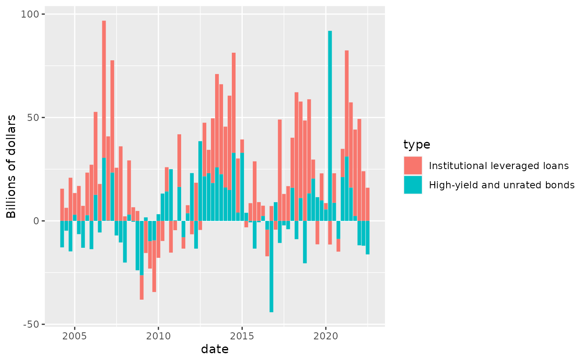
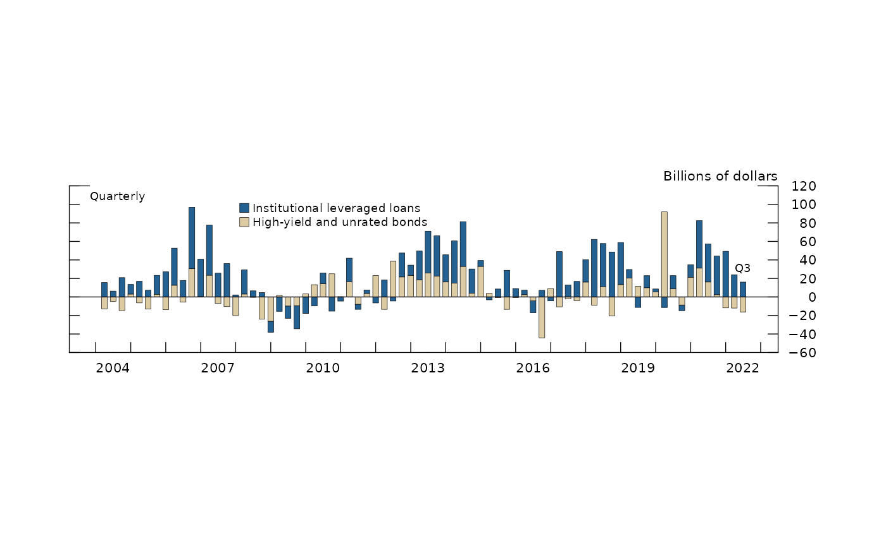
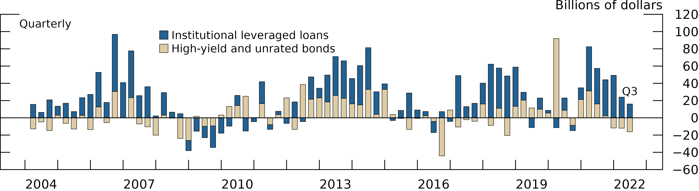

This section will demo how to create a barplot in fedplot style, using Figure 2.4 of the November 2022 FSR as a reference.
Example barplot
First, we load ggplot2, fedplot (which
contains the sample dataset FSR_2_4), and
scales.
library(ggplot2)
library(fedplot)
#> Warning in load_fed_font(): Cannot load font 'ITCFranklinGothic LT BookCn'; not
#> installed
library(scales)
packageVersion("fedplot")
#> [1] '0.6.0'
head(FSR_2_4)
#> # A tibble: 6 × 3
#> date risky_debt_type value
#> <date> <chr> <dbl>
#> 1 2004-04-01 Institutional leveraged loans 15.6
#> 2 2004-04-01 High-yield and unrated bonds -12.8
#> 3 2004-07-01 Institutional leveraged loans 6.33
#> 4 2004-07-01 High-yield and unrated bonds -4.74
#> 5 2004-10-01 Institutional leveraged loans 20.9
#> 6 2004-10-01 High-yield and unrated bonds -14.7We can construct the barplot using standard ggplot2
functions:
caption = "Source: Mergent, Fixed Income Securities Database; PitchBook Data, Leveraged Commentary & Data."
FSR_2_4 |>
ggplot(aes(x = date, y = value, fill=risky_debt_type)) +
geom_col() +
labs(y="Billions of dollars") # , caption=caption)
Now we customize it:
linewidth <- getOption("fedplot.linewidth_adj") * 0.25
FSR_2_4 |>
ggplot(aes(x = date, y = value, fill=risky_debt_type)) +
geom_col(color="black", linewidth=linewidth, width=60) + # Width is in days
labs(y="Billions of dollars") +
geom_hline_zero() +
scale_x_date(minor_breaks=seq(from=as.Date("2003-01-01"), to=as.Date("2023-01-01"), by="1 years"),
breaks=seq(from=as.Date("2004-06-30"), to=as.Date("2022-06-30"), by="3 years"),
date_labels="%Y",
expand=expansion(mult=.05)) +
scale_y_continuous(sec.axis = dup_axis(),
breaks = seq(-60, 120, by=20),
limits = c(-60, 120),
expand = expansion(mult=0),
labels = scales::label_number(style_negative = "minus")) +
#annotate_last_date() + # nudge_y = -3, nudge_x = 300) +
theme_fed(legend_position = c(.45, .7),
fill_palette=c("#DDCBA4", "#236192")) # + theme(legend.key.height = grid::unit(0.75, 'bigpts'))
Lastly, we want to export the chart so it matches the required dimensions and other image characteristics:
save_plot('barplot', size='wide', extension='all')
#> saved 'barplot.pdf' (99x420; size=wide; dpi=300)
#> saved 'barplot.eps' (99x420; size=wide; dpi=300)
#> saved 'barplot.png' (99x420; size=wide; dpi=600)After exporting through save_plot, the chart looks like
this:

Pending tasks:
- Legend symbols are not squares, but rectangles with height enlarged to span the line height. This is done on purpose on ggplot2 but can be changed by custom legend functions.
- Is there a rule for the bar width? Note that it’s set in terms of days and not in an absolute size.
- Add a
geom_col_fedfunction that automatically sets the required color (black) and linewidth (0.25 times adjustment). - Automatically use the required color fill palette (which needs to be determined).